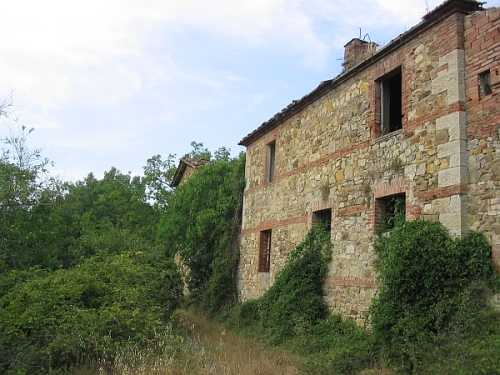
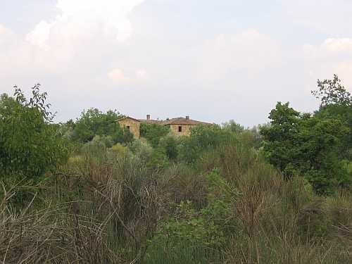

Quercegrossa (Ricordi e memorie)
CAPITOLO I - LUOGHI E PODERI
(MONASTERO)
Cliccami per ritornare all'Indice poderi
Vai all'Indice dei Capitoli
MONASTERO

Secondo alcuni recenti ricordi il nome di Monastero avrebbe la sua origine dalla proprietà di un monastero femminile di Siena, che lì vi ospitava le suore malate. Ora, quanto questa voce sia fondata non può essere dimostrato perché le più lontane notizie di questo podere ci portano nel Cinquecento, alla fine del secolo, quando la proprietà appartiene alla famiglia senese dei Tegliacci. Essi la conservano fino a metà Settecento quando risulta possesso dell’Opera Metropolitana del Duomo di Siena. A fine secolo il podere entra nei beni della famiglia Piccolomini con Flavio Bandini Naldi - Piccolomini che già possiede Poggiobenichi, e da lui ai suoi figli e nipoti che conservano la proprietà per tutto l’Ottocento fino all’acquisto da parte dei Sarrocchi nel 1905. Tutti i passaggi di proprietà dal 1825 sono identici a quelli del podere di Poggiobenichi e a quella voce descritti. Facente parte del popolo di S. Stefano alla Ripa, passò poi a Basciano e nel 1884 a Quercegrossa. La via principale per recarsi a Monastero passa dalla strada di Passeggeri, imboccata al bivio di Maciallina dalla strada regionale. Superato di circa un Km il ponte su Bozzone, e lasciato Castagnoli alle spalle, si devia a destra sulla strada pianeggiante che conduce a Monastero.

L’antico podere si presenta oggi aggredito dalla vegetazione che ne nasconde totalmente la parte Nord, quella del cortile, mentre a Sud l’aia e la capanna resistono a malapena ai guasti dell’abbandono e del tempo. Un edificio recente, probabilmente innalzato dal Sarrocchi e destinato a vari servizi, è posto a pochi metri dal corpo centrale. Nel 1825 sul catasto Monastero appare con casa e cortile di 896 bq. (304 mq.) e aia e capanna di 792 bq. Per tutta la sua storia conosciuta Monastero ha ospitato un solo contadino e soltanto in epoca recente con l’avvento del Sarrocchi il podere venne diviso e assegnato a due famiglie dal 1921. L’unica registrazione di un pigionale e di un colono risale e si limita agli anni 1668 con Alessandro Vicciani colono e Michele Turchi pigionale, e al 1669 con Iacopo Fiaschi e Francesco Cicali. In epoca anteriore si ricordano Biagio nel 1570 e nel 1572 Giago di Bernardino. Jacomo di Giovanni Battista Pecci è mezzaiolo nel 1584 e nel 1592 quando denuncia un raccolto complessivo nel podere di 5 moggia pari a 25 quintali di grano. Per tutto il Seicento vi dimorano famiglie di media entità, da sei a nove componenti, poi con la proprietà dell’Opera Metropolitana e a probabili lavori di ampliamento si registrano i Viligiardi (1722-1806) con una presenza media di quindici persone e il massimo di diciotto nel 1757. A questa famiglia subentrano i Masini e dopo di loro i Pianigiani per un quarantennio. Si registrano poi il Mannini David al censimento del 1881, Becatti dal 1887, Gambassi dal 1895 e Savino Capannoli dal 1898. Nel 1921 troviamo i due coloni Vegni e Cennini e nel 1931 Barbucci e Cennini. A Monastero I seguono i Baldi e i Mariotti che sono l’ultima famiglia di cui abbiamo notizie.
Podere e aia di Monastero.
Il forno di Monastero.
Targa attaccata ai muri di Monastero relativa all'Assicurazione antincendio.
Capitolo successivo Mulino
Inizio pagina
Vai all'Indice dei Capitoli
|